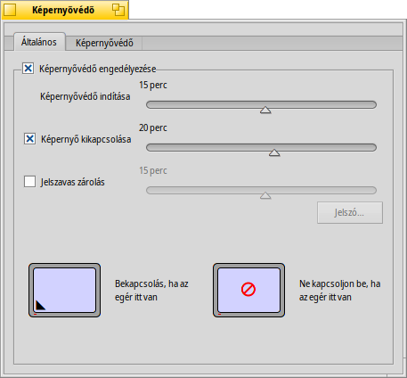
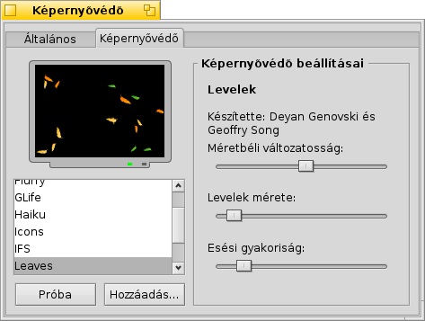

Magyar
Magyar Català
Català Deutsch
Deutsch English
English Español
Español Français
Français Italiano
Italiano Polski
Polski Português
Português Português (Brazil)
Português (Brazil) Română
Română Slovenčina
Slovenčina Suomi
Suomi Svenska
Svenska 中文 ［中文］
中文 ［中文］ Русский
Русский Українська
Українська 日本語
日本語 Képernyővédő (ScreenSaver)
Képernyővédő (ScreenSaver)
| Asztalsáv: | ||
| Útvonal: | /boot/system/preferences/Screensaver | |
| Bellítások: | ~/config/settings/ScreenSaver_settings |
A beállítások 2 részre oszthatóak:
 Aktiválás
Aktiválás

A felső jelölőnégyzettel ki- illetve bekapcsolhatjuk a képernyővédőt.
Az alatta taláható csúszkával pedig megadható az aktiválás késleltetése.
A következő 2 csúszka az aktiválás után hasznos:
- az első megadja, hogy mikor kapcsoljon ki a monitor
- a második pedig megadja, hogy mennyi idő után kérjen jelszót a feloldáshoz.
Az alsó két képernyőn bármelyik sarokba kattintva megadható, hogy bekapcsoljon, illetve ideiglenesen letiltásra kerüljön a képernyővédő, ha az egér az adott sarokban van. A képernyők közepén kattinva kikapcsolható ez a funkció.
Képernyővédők

A második fülön találhatóak az elérhető képernyővédők és az esetleges beállítások. Ezek azonnal ki is próbálhatóak a gombbal.
Egy új képernyővédőt, mely nem egy hagyományos .hpkg csomag része, egyszerűen csak másoljuk be a megfelelő non-packaged mappába (bővebben a Fájlrendszer felépítése fejezetben):
| /boot/system/non-packaged/add-ons/Screen Savers/ | képernyővédők minden felhasználó számára. | |
| /boot/home/config/non-packaged/add-ons/Screen Savers/ | képernyővédők saját használatra. |